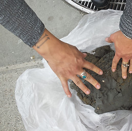

Desperate Holdings Real Estate & LandMind Spa
Cassie Thornton and The Feminist Economics Department (the FED)
Opening Friday April 5, 6-9PM
Welcomes you to the near-future of the Bay Area, when there will be no land left to rent or buy for anyone except the 1%. Our real-estate agents/therapists offer a wide range of artistic healing/revenge services for broken trust, lost hope and resentful longing.
Featuring transformations facilitated by: Yasmin Golan, Sarah Rowe, Ann Schnake, Tara Spalty, Cassie Thornton, Lindsay Tunkl, Danielle Wright
In 2015 Cassie Thornton, recently displaced from her San Francisco apartment, walked past the Salesforce Tower construction site in downtown San Francisco. Workers were digging 200 ft below, where they found Barbary Coast beams and thick clay-like soil. The foreman offered her and her friend a truckload of this clay, which would otherwise be sent to a toxic dump to be sanitized in Palo Alto. Since then Thornton has reconstituted, blended, and hoarded the precious clay, as liquid real estate.
"At times the clay has had a home, even when I haven't. The clay is beyond property, rent, and all the things that keep us from magic. If all I can do turn land into money, like any real estate agent, that is useless .... If I really had magic powers, what would this clay do?"
In this real estate office, we won't sell property. Instead we will touch and hold liquid real estate sourced from underneath the financial district of SF as we imagine what it would mean to see land and our creative energies as a commons.
